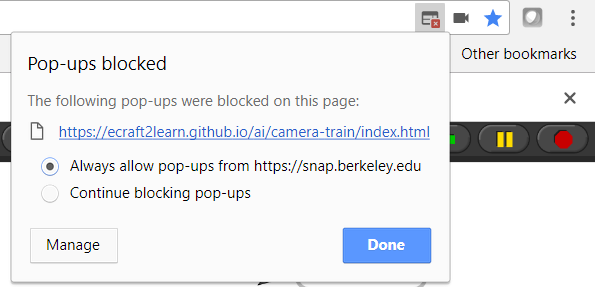

As with any technology things can go wrong. Here we discuss problems we are aware of. Please send email to Ken Kahn <toontalk@gmail.com> if you encounter any problems or have questions.
The guide has been well-tested on Chrome. Some problems have been observed with FireFox and Edge so best to avoid them. Some chapters need to load many Snap! projects as interactive illustrations. Unfortunately this can take several seconds causing scrolling and interactive illustrations to not work well while the page is loading. To address this there is a good deal of text to read at the top of each chapter while the rest is loading.
The first time the guide is loaded into Chrome it should ask for permission to use the microphone or camera. If you need to change the permission then read this help page by Google.
To fix the problem click the tiny icon that shows a page with a red box containing a white 'x' and select 'Always allow popups from ...'.
After allowing popups you may need to refresh the page.
Training a computer to recognise images runs quickly on modern PCs because it is able to use the GPU that is part of nearly all computers. There is a GPU on a Raspberry Pi but you may find it runs very slowly. Developers are working on a means to save a model after training. When this is ready one can train on a PC and the load the trained model on a Raspberry Pi.
The Raspberry Pi may think there are multiple audio devices. Right clicking on the speaker volume icon should display alternative devices.
Depending upon the kind of microphone connected (internal or USB) the browser may not know how to access the microphone.
You may need to launch Chromium with an argument describing the alsa-input-device:
chromium-browser --alsa-input-device=...
The Raspberry Pi cannot run Chrome but can run Chromium instead. One of the few ways in which Chromium differs from Chrome is that it has no builtin voices. The easiet workaround is to rely upon the MARY TTS speech blocks instead.